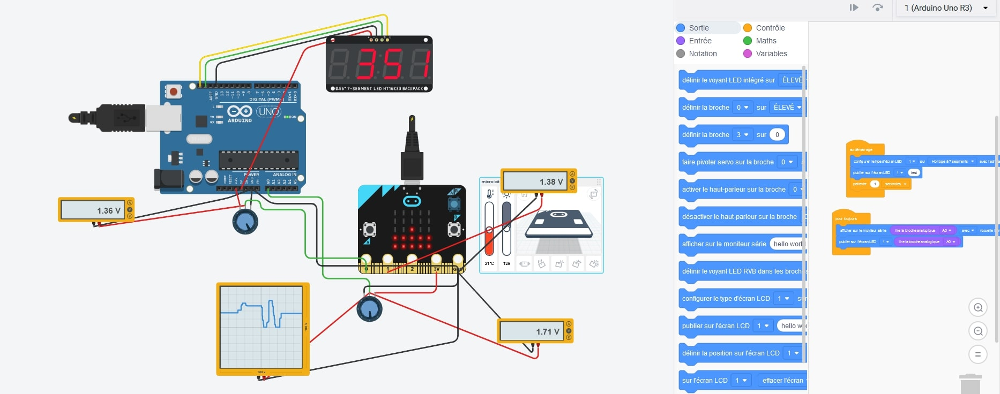
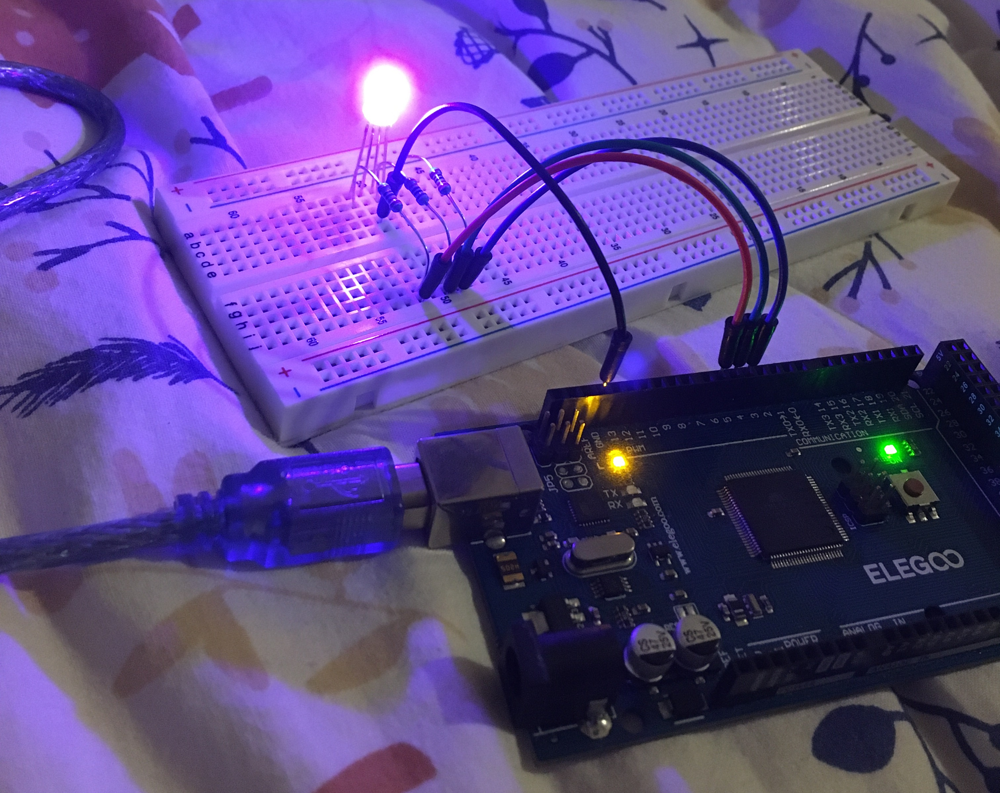
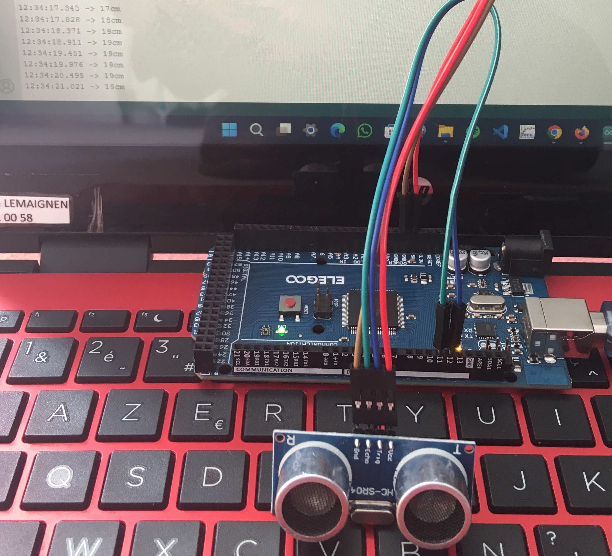
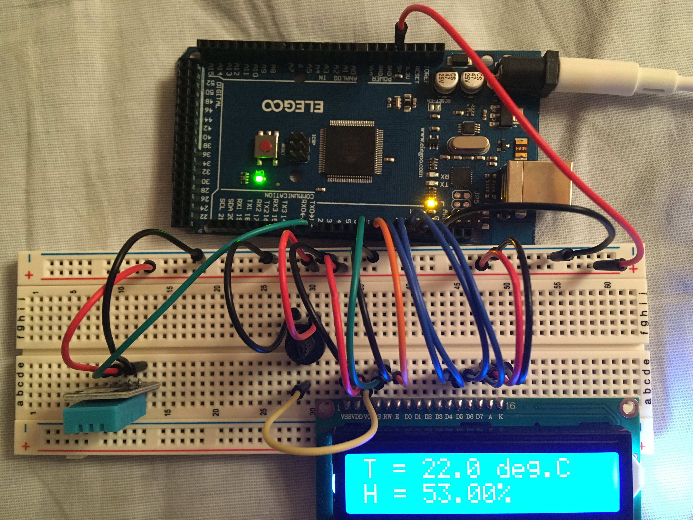
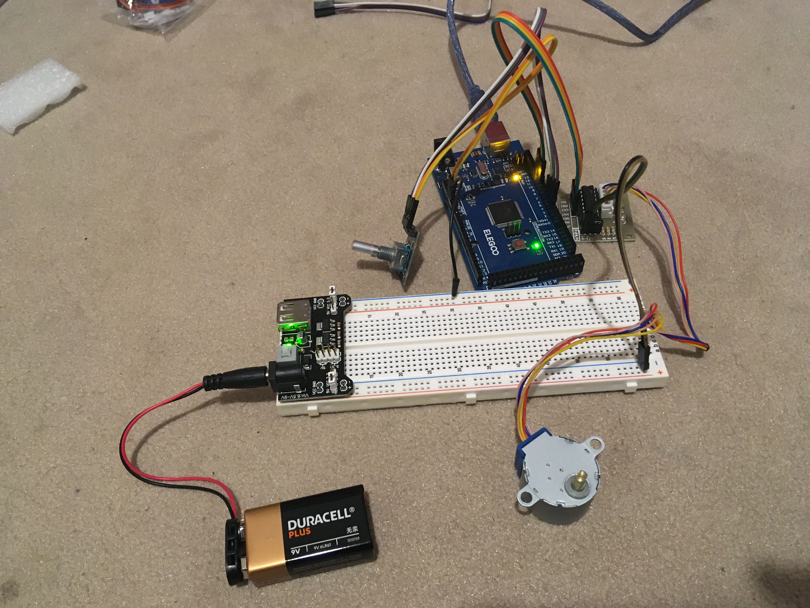
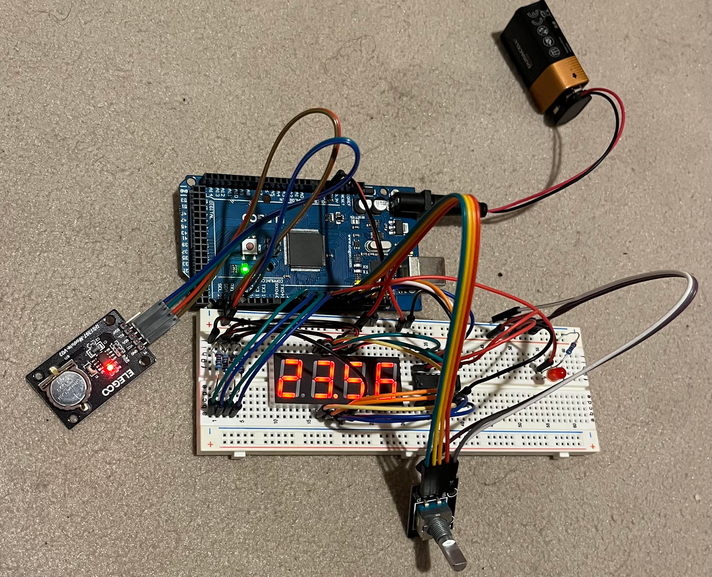

Mes différents projets Arduino et circuit
Projet avec des circuits logiques
 Projet avec tinkarcad : circuit électrique qui allume des leds avec 2 boutons à glissière, en utilisant 2 portes logiques ' et ' et ' ou '.
Projet avec tinkarcad : circuit électrique qui allume des leds avec 2 boutons à glissière, en utilisant 2 portes logiques ' et ' et ' ou '.
source du projet
Test de communication entre un Arduino et un Microbit

Projet avec tinkarcad : Test de communication entre un Arduino et un Microbit en utilisant les ports analogiques; Opération qui s'est vite retrouvée compliquée car l'Arduino marche avec 5V et le microbit 3V.
source du projet
Carte programmable Arduino (Elegoo )

Une led RGB programmée avec la carte.
Télémètre à ultrasons

Mesure de la distance avec un télémètre à ultrasons puis affichage du résultat sur la console de l'ordinateur.
Fabriquer un thermomètre

Mesure de la température et de l'humidité, puis affichage des résultats sur l'écran LCD.
Utiliser un moteur incrémentale

Moteur incrémentale
Fabriquer un réveil

Un réveil qui affiche l'heure sur un affichage 7 segement. Quand l'heure de déclenchement est atteinte il sonne et allume une led pendant 30s. Cette heure est réglable avec le compteur incrémentale